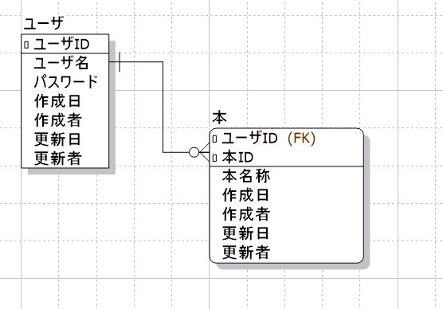
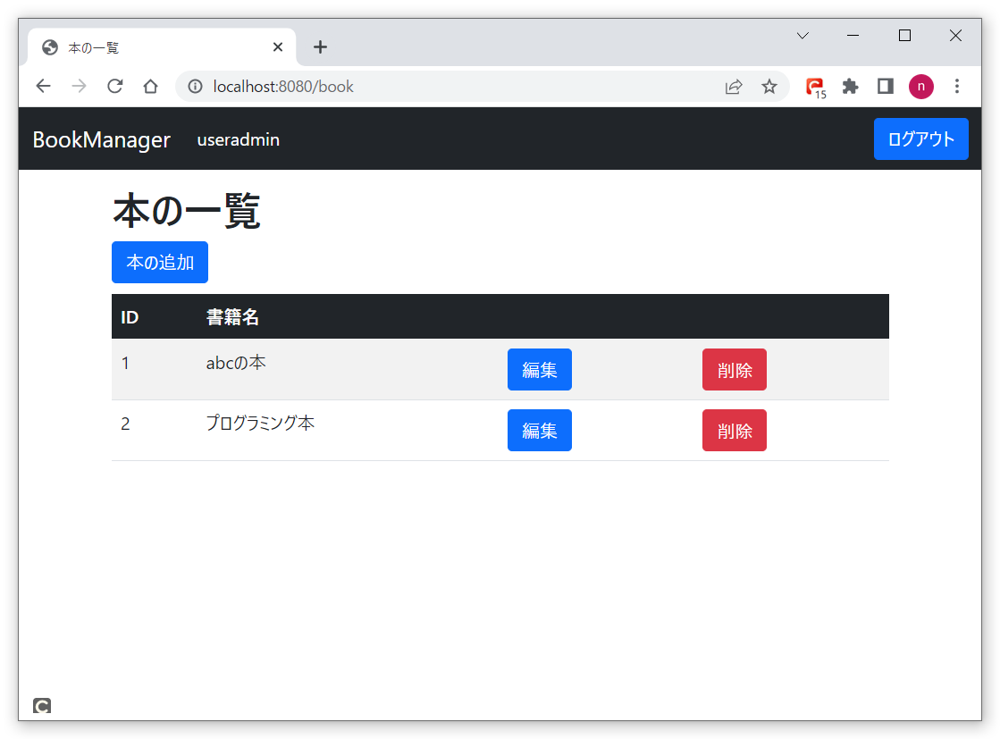
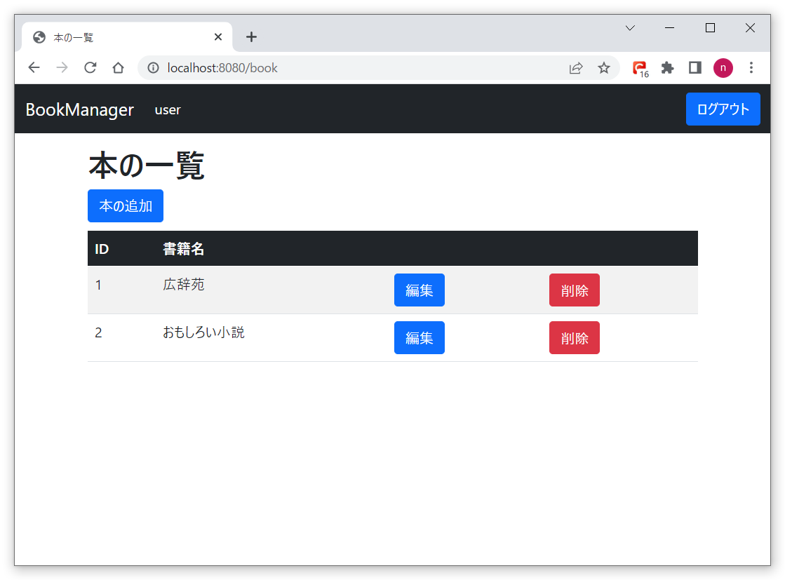

ユーザごとに本を管理できるよう実装
1人のユーザが複数の本を管理できるよう実装を修正します。
以下が1人のユーザが複数の本を管理できるようにするためのER図イメージです。
ユーザ名「useradmin」、パスワード「admin」でログインします。
useradminの本が一覧に表示され、本の追加変更削除ができます。
一覧画面からログアウトし、ユーザ名「user」、パスワード「admin」でログインします。
userの本が一覧に表示され、本の追加変更削除ができます。
ソースファイルは以下からダウンロードして下さい。
ソースについて
SQLマッパー部分のソースです。
今まではbookテーブルに対してのシンプルなCRUDでした。それにユーザIDの絞り込みを追加したので、本とユーザを特定し、CRUDしています。
<?xml version="1.0" encoding="UTF-8" ?>
<!DOCTYPE mapper
PUBLIC "-//mybatis.org//DTD Mapper 3.0//EN"
"http://mybatis.org/dtd/mybatis-3-mapper.dtd">
<mapper namespace="com.bookmanager.book.repository.BookMapper">
<select id="search" resultType="com.bookmanager.book.entity.Book">
SELECT * FROM book
WHERE user_id = #{userId}
order by book_id
</select>
<select id="findByBookId" resultType="com.bookmanager.book.entity.Book">
SELECT * FROM book
WHERE book_id = #{bookId}
</select>
<select id="findByUserIdAndBookId" resultType="com.bookmanager.book.entity.Book">
SELECT * FROM book
WHERE book_id = #{bookId}
AND user_id = #{userId}
</select>
<insert id="save">
insert into Book (user_id, book_id, book_name, created_date, created_user, updated_date, updated_user)
values (#{userId}, #{bookId}, #{bookName}, now(), #{userName}, now(), #{userName})
</insert>
<delete id="delete">
DELETE FROM book
WHERE book_id = #{bookId}
AND user_id = #{userId}
</delete>
<update id="update">
UPDATE book
SET
book_name = #{bookName}
, updated_date = now()
, updated_user = #{userName}
WHERE book_id = #{bookId}
AND user_id = #{userId}
</update>
</mapper>
起動方法について
BookmanagerApplication.java
を実行し、SpringBootを起動します。
http://localhost:8080/bookにアクセスし、ユーザごとにログインし、それぞれの本を管理できることを確認します。
以上です。いかがだったでしょうか。これでアプリで複数のユーザによる本が管理できる仕組みとなりました。